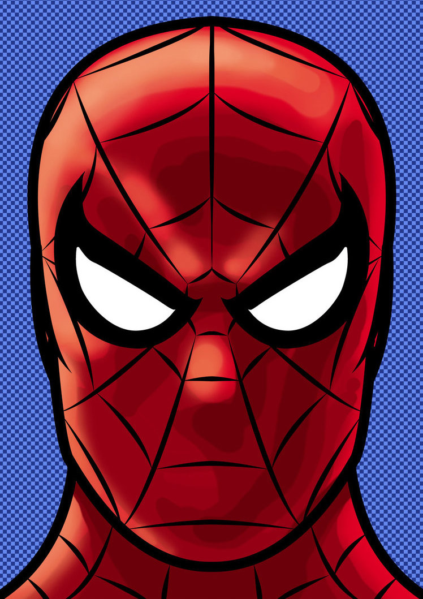

Life of Peter Parker
Peter Parker was orphaned at the age of 6 when his parents were killed in an airplane crash overseas. He went to live with his uncle and aunt, Ben and May Parker, in Forest Hills, New York. Parker was extremely bright and became a high honors student at Midtown High School.Parker's shyness and scholastic interest often made him a social outcast. One evening Parker attended a public exhibition demonstrating the safe handling of nuclear laboratory waste materials sponcored by the General Techtronics Corporation. During the demonstration, a small Common House Spider happened to be in the path of a particle accelerator's beam and was massively irradiated. The stricken spider fell on to Parker's hand, broke his skin with its fangs, and died. His hand burning from the bite, Parker left the exhibition. Parker made his way home and passed through an unfamiliar section of the city where he was accosted by a gang of hoodlums. Tossing the gang members aside, Parker was shocked by his own display of strength. As he fled from them, he ran into the path of a speeding car, and leaped to safety about 30 feet up onto a nearby wall. To his growing surprise, he discovered that he was able to stick to the wall with his fingertips. As he easily walked down a guy wire to the street below, he realized that henow possessed a superb sense of balance. Parker quickly associated these spider-like abilities with the bitefrom the irradiated spider.
Life of Peter ParkerLife of The Amazing Spiderman
Spider-Man has spider-like abilities including superhuman strength and the ability to cling to most surfaces. He is also extremely agile and has amazing reflexes. Spider-Man also has a “spider sense,” that warns him of impending danger. Spider-Man has supplemented his powers with technology. Being a brilliant chemist and scientist, Peter has made web-slingers, bracelets that shoot out a sticky webbing, allowing him to swing from building to building and ensnare opponents. He has also developed stingers that shoot powerful energy blasts that can stun foes. In the recent storyline, Spider-Man has been reborn with even stronger abilities. He has the ability to see in the dark, enhanced senses, and can feel the vibrations through his webbing. In addition to this, the new, “Iron Spidey,” suit has enhanced his strength further and gives protection from damage. Recently, however, he has gotten rid of the suit and returned to the classic costume.
Life of The Amazing Spiderman